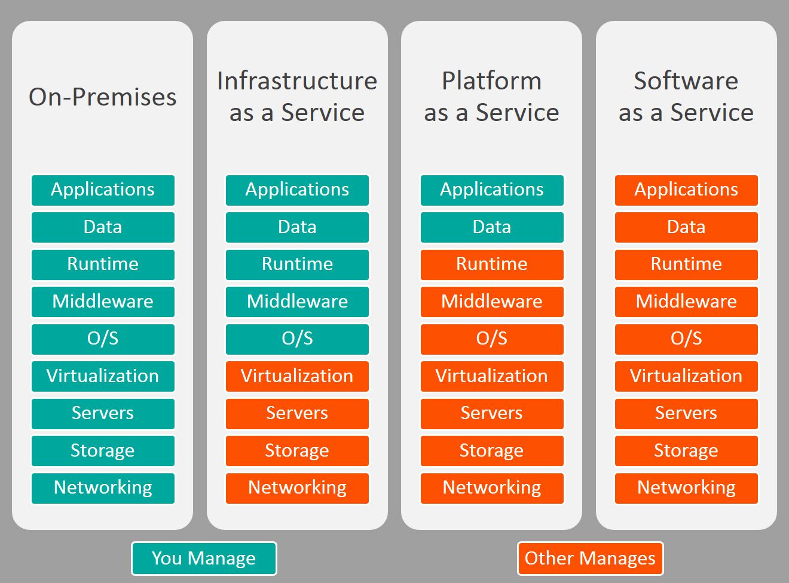

Typen von Cloud
- Privat Cloud - Resourcen werden für, von einem Unternehmen gemacht
- Public Cloud - Resourcen werden von einem Drittenanbieter bereitgestellt
- Hybrid Cloud - Mischung von Privat und Public Cloud
- Community Cloud - einige Firmen verwenden zusammen ein Cloud

| Hyperscalers |
| AWS |
| Azura |
| Google Cloud Platform |
| Alibaba Cloud Computing |
Merkale der cloud Computing
- On demand self-service
- Broad Network access
- Ressource pooling
- Rapid elasticity
- Measured Service
Vorteile der Cloud
- Bezahlung nach Verbrauch
- Geringe Gesamtkosten
- Weltweiter Zugang
Nachteile der Cloud
- sehr höhe Koplexität
- Weniger Kontrolle
Andere Begriffe
- Cloud Migration - Übertragung von IT-Resourcen von einem Privaten zu Public Cloud
- FTP - File Transfer Protokol
- SSH - Secure Shell, Zugriff an Instanz mit Hilfe von Bash
- cloud-init - um die Konfiguration von virtuellen Maschinen oder Instanzen beim Start zu
automatisieren.
- Hyperscalers - sind Firmen die Public Cloud bereitstellen
- Cloud Computing - Cloud Computing ist die Bereitstellung von Computing-Ressourcen (d. h. Server,
Speicher, Daten-banken,
Netzwerkkomponenten, Software, Analyse- und intelligente Funktionen, KI, Machine Learning etc.) über
das Internet, um
schnellere Innovationen, flexible Ressourcen und Skalenef-fekte zu bieten.